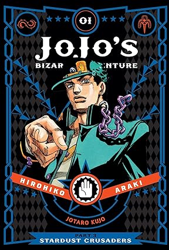
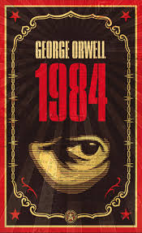

Galáctico
En un universo donde las palabras son estrellas y las historias constelaciones, nació la editorial "Galáctico". Fundada por la escritora Stella Vega y el editor Lucas Orion, se destacó por publicar obras de ciencia ficción, fantasía y género especulativo que desafiaban la imaginación. Con un enfoque en apoyar a los autores emergentes, "Galáctico" se convirtió en un faro en el mundo editorial, celebrando la diversidad de voces y perspectivas. Su legado perdura, inspirando a lectores y escritores a explorar nuevos horizontes literarios más allá de las estrellas.

JoJo's Bizarre Adventure
Hirohiko Araki - 1989

1984
George Orwell - 1949